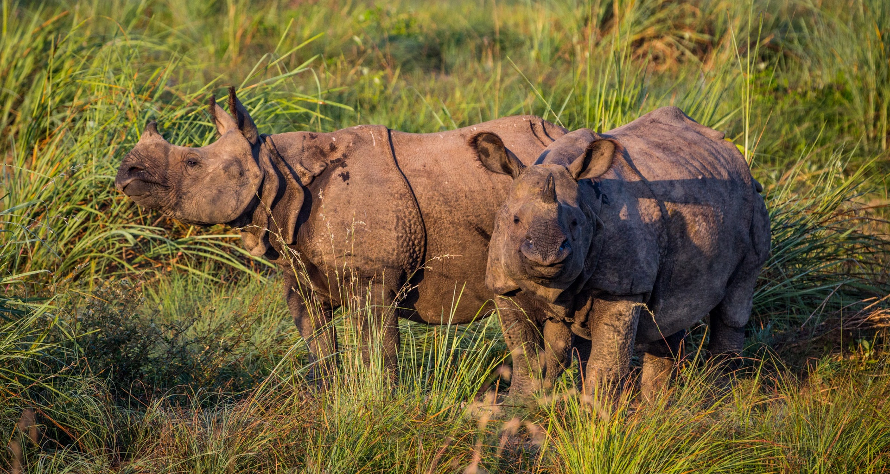
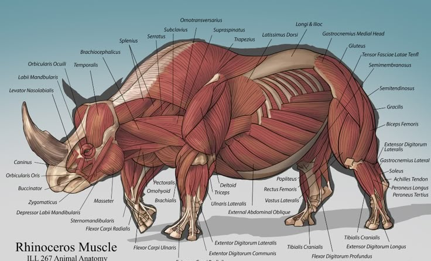
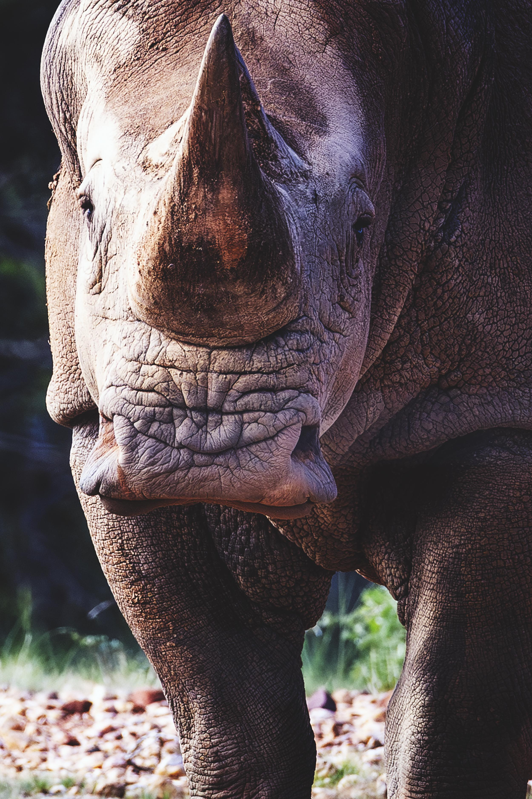

Rhinoceroses are among the oldest surviving large mammals on Earth. Known for their thick skin and powerful horns, rhinos have roamed grasslands and forests for millions of years.
Despite their immense strength, rhinos face severe threats from poaching and habitat destruction, making conservation efforts critically important today.
Rhinos possess thick protective skin, strong muscular bodies, powerful legs, and distinctive horns made of keratin. Their large bodies allow them to defend themselves against predators and survive harsh environments.


Rhinos inhabit savannas, grasslands, wetlands, and tropical forests depending on the species. Most African rhinos live inside protected wildlife reserves.
Rhino populations declined dramatically over the last century. Conservation programs have helped some populations recover, but several rhino species remain critically endangered.
Wildlife organizations protect rhinos through anti-poaching patrols, wildlife reserves, monitoring systems, and breeding programs.
| Feature | Information |
|---|---|
| Scientific Family | Rhinocerotidae |
| Average Lifespan | 35–50 years |
| Weight | 800–2,300 kg |
| Diet | Herbivore |
| Main Threat | Poaching |